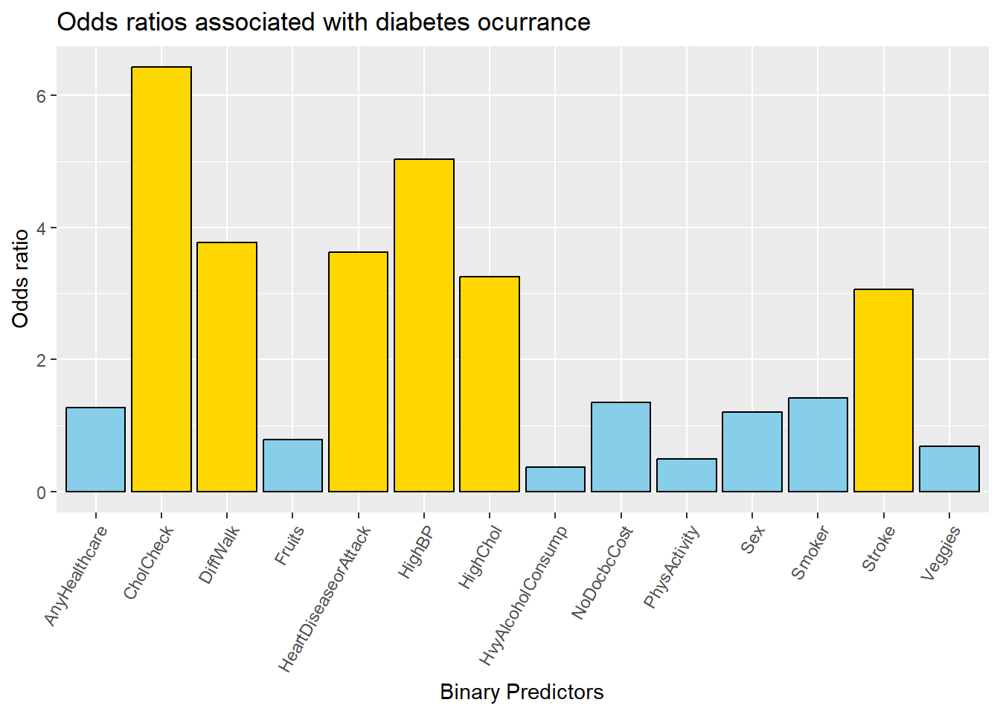
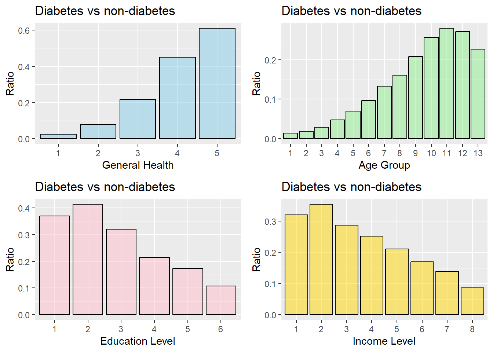

Diabetes is a wide-spread disease, especially in the US. Although genetic plays a role in the ethiology of diabetes, it has been estimated around 90% to 95% of diabetes cases could be attributed to life-style factors, like diet, weight management and physical activity.This data set aimed to providel links between patients’ diabetic conditions, life pattern behavior and social-economic status.
For this project, a csv of the data set available on Kaggle for the year 2015 was used. This original data set contains responses from 441,455 individuals and has 330 features. These features are either questions directly asked of participants, or calculated variables based on individual participant responses.The file we are interested in (diabetes _ binary _ health _ indicators _ BRFSS2015.csv) is a clean dataset of 253,680 survey responses to the CDC’s BRFSS2015. The target variable Diabetes_binary has 2 classes. 0 is for no diabetes, and 1 is for prediabetes or diabetes. This dataset has 21 feature variables and is not balanced. Our goal is to find how the combination of different input factors could contribute to the prediction of diabetic status.
As shown, this data set has 22 variables, we will use only 1 Diabetes_binary as an outcome variable, and all others as predictors. However, there are many numeric variables that should actually be treated as factors. We will change those variables.
library (dplyr)
Warning: package 'dplyr' was built under R version 4.3.3
Attaching package: 'dplyr'
The following objects are masked from 'package:stats':
filter, lag
The following objects are masked from 'package:base':
intersect, setdiff, setequal, union
From the summary table we could easily find those factors significantly contribute to the occurance of diabetes. Is there a way to find the hazard ratio of those life-style factors to diabetes? Luckily there is a package for that.
library (tidyverse)
Warning: package 'ggplot2' was built under R version 4.3.3
Warning: package 'tidyr' was built under R version 4.3.3
Warning: package 'readr' was built under R version 4.3.3
Warning: package 'stringr' was built under R version 4.3.3
Warning: package 'lubridate' was built under R version 4.3.3
── Attaching core tidyverse packages ──────────────────────── tidyverse 2.0.0 ──
✔ forcats 1.0.0 ✔ readr 2.1.5
✔ ggplot2 3.5.1 ✔ stringr 1.5.1
✔ lubridate 1.9.3 ✔ tibble 3.2.1
✔ purrr 1.0.2 ✔ tidyr 1.3.1
── Conflicts ────────────────────────────────────────── tidyverse_conflicts() ──
✖ dplyr::filter() masks stats::filter()
✖ dplyr::lag() masks stats::lag()
ℹ Use the conflicted package (<http://conflicted.r-lib.org/>) to force all conflicts to become errors
`summarise()` has grouped output by 'Smoker'. You can override using the
`.groups` argument.
We are provided with many categorical variables with only one outcome and many others being predictors. Given diabetes are highly attributagle to life style and living condition factors, it is intuitive to make tables to calculate the hazard ratio. Luckily there is a package for that.
calculate_odds_ratio <-function(data) {# Compute odds ratio using contingency table tab <-matrix(c(data$`0`[1], data$`1`[1], data$`0`[2], data$`1`[2]),nrow =2, byrow =TRUE)# Use the fisher.test for OR and CI test <-fisher.test(tab)list(OR = test$estimate,CI = test$conf.int,P_value = test$p.value )}# Apply the function to your dataresult <-calculate_odds_ratio(smdbtable)print(result)
We could plot the odds ratio of different factors to diabetes.
diabetes_OR_df <-data.frame (category =names (diabetes_OR),OR =as.numeric (diabetes_OR))ggplot(diabetes_OR_df, aes(x = category, y = OR)) +geom_bar(stat ="identity", fill =ifelse(diabetes_OR_df$OR >2, "gold", "skyblue"), color ="black") +labs(title ="Odds ratios associated with diabetes ocurrance", x ="Binary Predictors", y ="Odds ratio") +theme(axis.text.x =element_text(angle =60, hjust =1))

From the bar plot, we could highlight the predictors with OR bigger than 2 (generally considered “big enough” in diabetic study) to be significant contributors of diabetes, including whether or not the person has experienced heart disease or attack, stroke, has high blood pressure or high cholesterol, or experienced difficulty in walking or had their cholesterol level checked in the past 5 years. Despite being the strongest predictor of diabetes (without considering the interaction among factors), Having Cholchecked still could only have about 17% of chance being diagnosed diabetes (35105 diabetes out of 209105 people), so a model combining multiple predictors and considering predictors interaction is definitely needed.
There are four other factors which have more than two categories. Let’s make contingency tables with those variables.
To find out whether there is a relationship between the incidence of diabetes and different levels of the multi-level variables, we could conduct statistical test over each contingency table.
Variable p_value
1 Genhlth 0
2 Age 0
3 Education 0
4 Income 0
So all four variables have a significant effect on the incidence of diabetes as the p-values are close to 0, meaning the chances that those variables have no effect on the incidence of diabetes are close to 0. To gain a more visual impression of the variables’ impact on diabetes, we could do this:
The following object is masked from 'package:dplyr':
combine
Diabetes_Genhlth_plot <-ggplot(Genhlth_table, aes(x = GenHlth, y = ratio)) +geom_bar(stat ="identity", fill ="skyblue", color ="black", alpha =0.5) +labs(title ="Diabetes vs non-diabetes", x ="General Health", y ="Ratio")Diabetes_Age_plot <-ggplot(Age_table, aes(x = Age, y = ratio)) +geom_bar(stat ="identity", fill ="lightgreen", color ="black", alpha =0.5) +labs(title ="Diabetes vs non-diabetes", x ="Age Group", y ="Ratio")Diabetes_Edu_plot <-ggplot(Edu_table, aes(x = Education, y = ratio)) +geom_bar(stat ="identity", fill ="pink", color ="black", alpha =0.5) +labs(title ="Diabetes vs non-diabetes", x ="Education Level", y ="Ratio")Diabetes_Income_plot <-ggplot(Income_table, aes(x = Income, y = ratio)) +geom_bar(stat ="identity", fill ="gold", color ="black", alpha =0.5) +labs(title ="Diabetes vs non-diabetes", x ="Income Level", y ="Ratio")grid.arrange(Diabetes_Genhlth_plot, Diabetes_Age_plot, Diabetes_Edu_plot, Diabetes_Income_plot, ncol =2)

From the bar plot we could tell 1) People with poorest general health is the most likely to be diagnosed with diabetes; 2) As people get older, the rate of diabetes increased but topped at age group 11, which corresponds to 70 to 74 yo. 3) People in the Education level 2 and Income level 2, but not the least-educated and poorest, are the most likely to be diagnosed diabetes. This reflects the impact of social-economic status on the incidence of diabetes.
To measure the overall association between different categorical variable, we could use Cramér’s V method to generate the association matrix and then plot it using pheatmeap
library (vcd)
Warning: package 'vcd' was built under R version 4.3.3
We could see the categorical variables most highly associated with Diabetic status is “General Health”, “High BP”, “High Chol”, “High BMI”. In addition, it is also associated with “Physical health”, “Difficult to walk”, “Heart disease or attack”, “Age” and “Income”. It is of note there are several other categorical factors that have strong association that we may need to take care of when doing modeling. Nevertheless, the strongest predictor that associates with diabetic status has a assocition score of merely 0.3. Hopefully we could find the combination of predictors through modelling that could explain ~0.7 of the diabetic status.